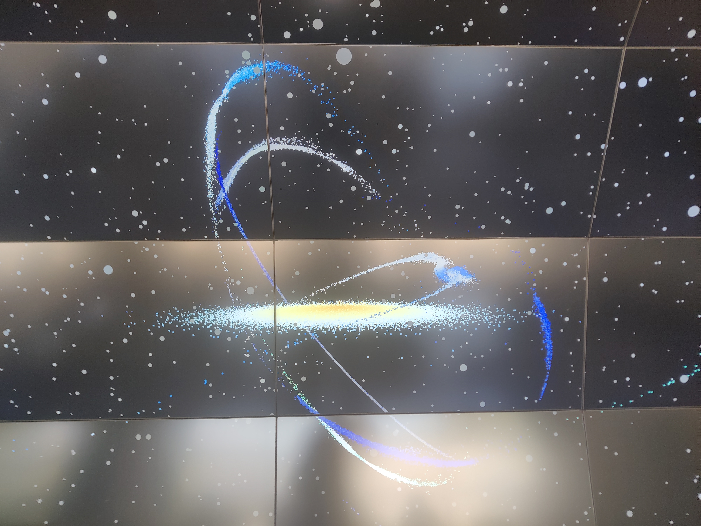
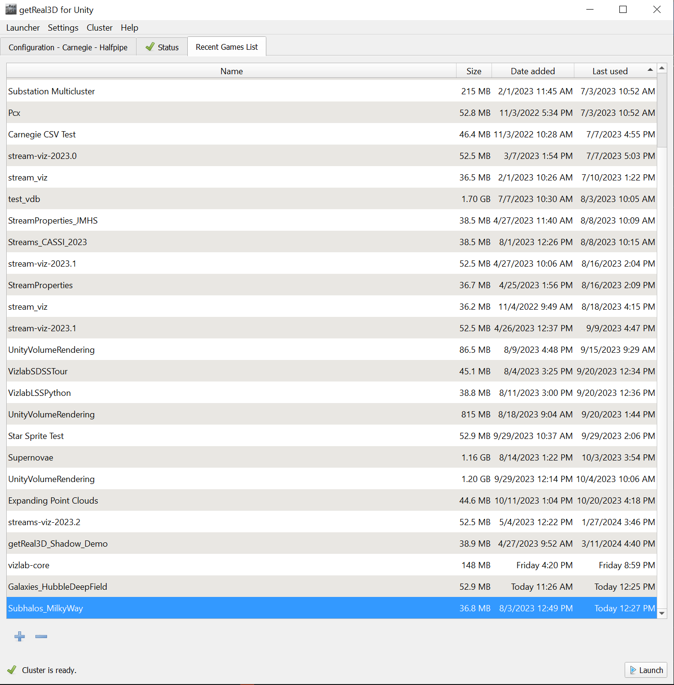
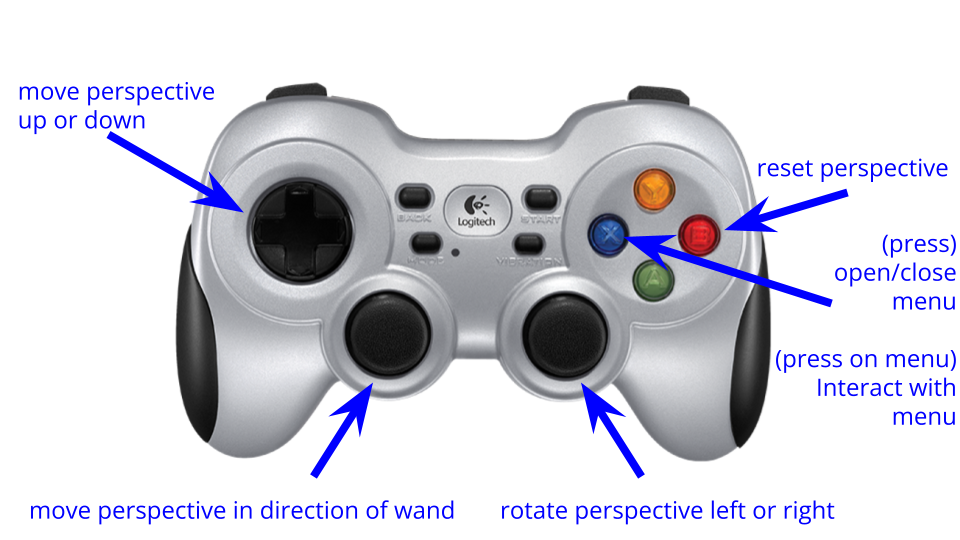

Stellar streams
{kind=link}
How to run
First off, you’ll want to follow the quick-start guide to prep the various pieces of the VizLab system to run properly. Once you’ve followed those instructions, launch the Subhalos_MilkyWay scene with the runner.
{kind=link}
How to control
Consult the diagram below for some details on how to control the scene:
{kind=link}
One extra quirk worth mentioning is that you’ll see a wand projected into the simulated space from wherever the tracked controller is in real life. When you move the perspective with the left stick, you move in the direction of the wand. So if you want to go up in the scene, you can tilt the controller up and press forward on the stick. Similarly, you go down by tilting down and pressing forward.
The science
This scene depicts stars in the Milky Way disk along with simulated stellar streams (around the disk in blue) and simulated dark matter (throughout the scene in gray). The blue on the stellar streams directly relates to the velocity kick that each star in the stream is experiencing. The data and visualization was done by Ana Bonaca!
There are a few smaller details in the scene worth mentioning. You might notice a dot that’s larger than the others; it represents the Large Magellanic Cloud.There’s also a fun scientific Easter egg in this scene: you can actually find the Sun in the Milky Way disk. Look for a special red dot on the underside of the disk; that’s the Sun!